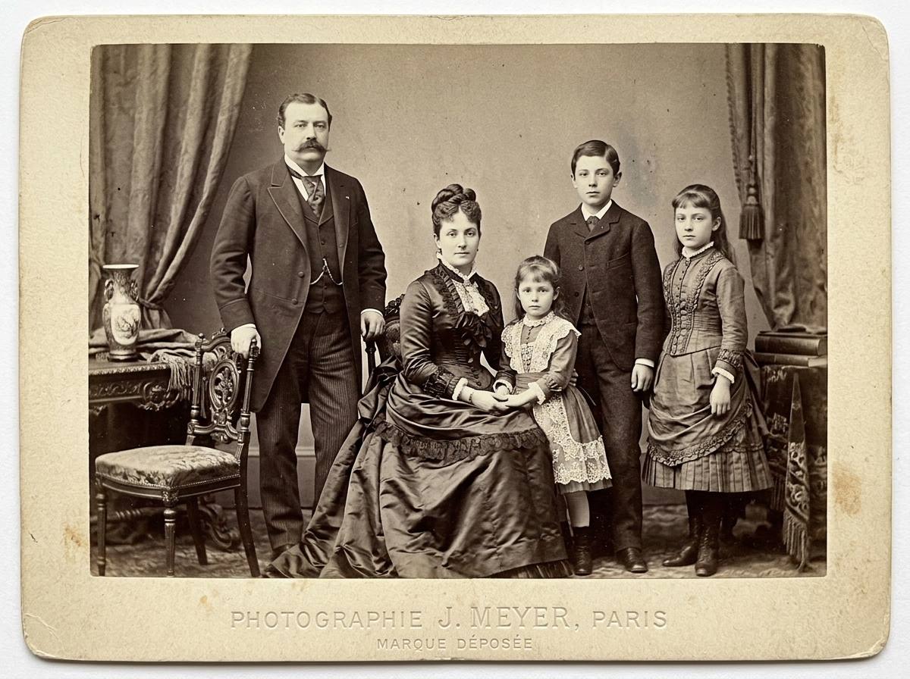
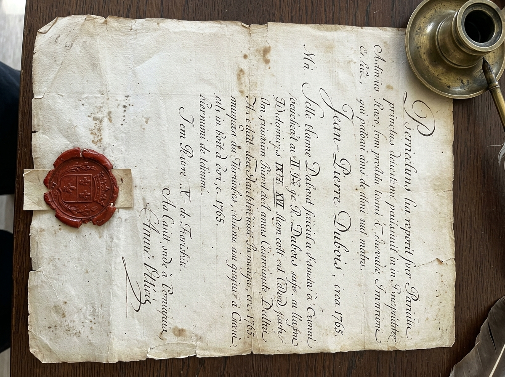
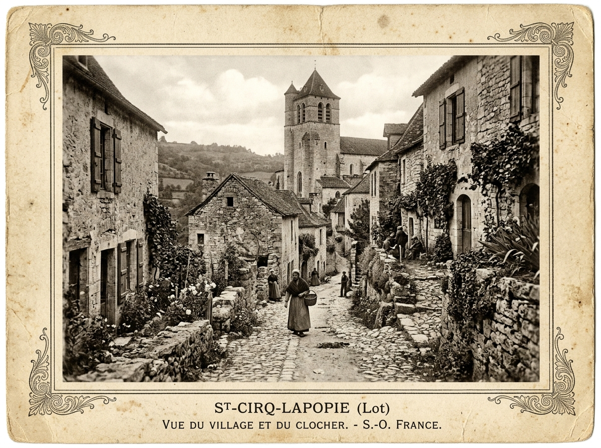

« Exploitants du moulin à eau de la paroisse pendant plus d'un siècle, avant que certains rameaux ne rejoignent les offices de Figeac. »
📜 Mémoire vivante & Archives familiales
Retrouvez les racines de vos ancêtres à Saint-Hilaire
Parcourez plus de trois siècles d'actes paroissiaux, de recensements et de souvenirs. Une fresque humaine dédiée à la mémoire des hommes et des femmes qui ont bâti notre village.
480+
Individus répertoriés
12
Générations suivies
1642
Plus ancien acte paroissial
18
Patronymes historiques
Période :
4 familles répertoriées
💡 Astuce : Cliquez sur « Découvrir la lignée » pour déplier l'arbre d'ascendance.
🏛️ Les Familles de Saint-Hilaire
Fiches synthétiques des principales branches familiales de la commune.
« Gardiens des coteaux et des foudres de chêne, ils ont façonné le paysage viticole des versants ensoleillés du Lot. »
« Notables et consuls de la communauté villageoise, ils animaient les échanges de toiles et de draps sur les foires du Quercy. »
« La forge des Lacam a résonné sur la place du village pendant deux siècles, au service des attelages et du matériel agricole. »
📂 Galerie des Archives & Actes Anciens
Numérisations haute fidélité, photographies d'époque et transcriptions d'actes authentiques.

🔍
Portrait de famille — Fin XIXe
Tirage photographique d'atelier avec sceau et dorures d'époque.
Fonds Iconographique 19e
🔍
Acte Paroissial avec Sceau — 1765
Parchemin d'époque portant l'écriture cursive et le cachet de cire royale.
AD46 — BMS 1760-1780
🔍
Vue du Village et du Clocher — 1900
Le cadre de vie de nos aïeux au tournant du XXe siècle.
CP-46 / Fonds Cartophile⏳ Frise Chronologique de la Mémoire Locale
Les grandes étapes de l'histoire familiale croisées avec les événements du Quercy.
1685
Ouverture des registres paroissiaux
Premières inscriptions complètes de baptêmes, mariages et sépultures tenues par le curé de Saint-Hilaire, mentionnant les aïeux Guilhem et Maraval.
1789
Cahier de Doléances de la Paroisse
Les habitants assemblés désignent leurs députés pour la sénéchaussée et réclament l'égalité devant l'impôt et la libre circulation des farines du moulin.
1848
Instauration du suffrage universel masculin
Premier recensement nominatif exhaustif conservé en mairie, détaillant profession, âge et composition exacte de chaque foyer villageois.
1914 — 1918
Mémoire des Enfants de la Commune
Reconstitution des parcours militaires et hommages aux jeunes hommes mobilisés des familles Guillemant, Dubois, Lacam et consorts.
Vous partagez des racines à Saint-Hilaire ?
La généalogie est avant tout une aventure de partage ! Si vous reconnaissez un patronyme, un ancêtre commun, ou si vous possédez de vieux actes, photographies ou lettres de famille, écrivez-nous pour enrichir notre base commune.
- ✓ Échange gratuit d'arbres généalogiques et exports GEDCOM
- ✓ Aide au déchiffrage d'écritures anciennes (paléographie)
- ✓ Mise en relation entre cousins généalogiques du Lot
Ressources & Archives en Ligne
Consultez les registres d'état civil originaux et les bases de données collaboratives.